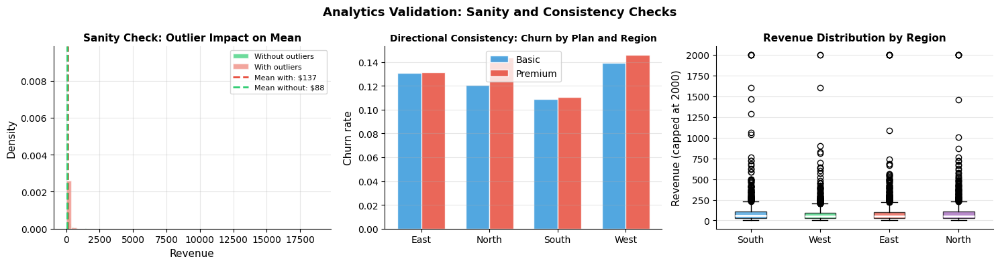
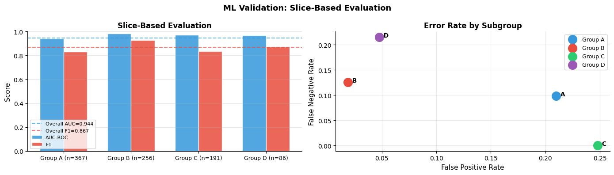
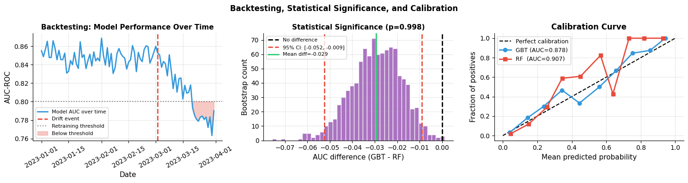

How do you validate and test your work?#
Topics: Analytics Validation · Sanity Checks · ML Validation · Holdout Testing · Slice-based Evaluation · Backtesting · Statistical Significance
1. Analytics Validation#
Sanity checks#
Do numbers match known benchmarks? (industry averages, prior reports)
Does the direction of the finding make intuitive sense?
Does the result hold when you exclude extreme values or outliers?
Does it hold across different time periods?
Peer review checklist#
Is the analysis unit correct? (users, sessions, transactions — not mixed)
Is the time period complete and consistent?
Are there obvious data quality issues (unexpected nulls, impossible values)?
Is the metric definition consistent throughout the analysis?
Directional consistency#
Does the finding hold across key subgroups? (region, device, plan type)
If the result reverses in a subgroup, investigate — could be Simpson’s paradox
Gotchas#
‘The numbers look reasonable’ is not validation — compare to a known ground truth
Outliers can completely reverse aggregate statistics — always check with and without
Always validate against an alternative data source where possible
import pandas as pd
import numpy as np
import matplotlib.pyplot as plt
from scipy import stats
import warnings
warnings.filterwarnings('ignore')
np.random.seed(42)
n = 5000
df = pd.DataFrame({
'region' : np.random.choice(['North', 'South', 'East', 'West'], n, p=[0.3, 0.25, 0.25, 0.2]),
'plan' : np.random.choice(['basic', 'premium'], n, p=[0.7, 0.3]),
'revenue' : np.clip(np.random.lognormal(4, 1, n), 1, 2000).round(2),
'churned' : np.random.binomial(1, 0.12, n),
})
# Introduce outliers
df.loc[np.random.choice(n, 20, replace=False), 'revenue'] = np.random.uniform(5000, 20000, 20)
fig, axes = plt.subplots(1, 3, figsize=(15, 4))
# Sanity check: mean with vs without outliers
with_outliers = df['revenue'].mean()
without_outliers = df[df['revenue'] < 2000]['revenue'].mean()
axes[0].hist(df[df['revenue'] < 2000]['revenue'], bins=50, color='#2ECC71',
alpha=0.7, edgecolor='white', label='Without outliers', density=True)
axes[0].hist(df['revenue'], bins=50, color='#E74C3C',
alpha=0.5, edgecolor='white', label='With outliers', density=True)
axes[0].axvline(with_outliers, color='#E74C3C', linewidth=2, linestyle='--',
label=f'Mean with: ${with_outliers:.0f}')
axes[0].axvline(without_outliers, color='#2ECC71', linewidth=2, linestyle='--',
label=f'Mean without: ${without_outliers:.0f}')
axes[0].set_xlabel('Revenue', fontsize=11)
axes[0].set_ylabel('Density', fontsize=11)
axes[0].set_title('Sanity Check: Outlier Impact on Mean', fontsize=11, fontweight='bold')
axes[0].legend(fontsize=8)
axes[0].grid(True, alpha=0.3)
axes[0].spines['top'].set_visible(False); axes[0].spines['right'].set_visible(False)
# Directional consistency: churn by plan across regions
pivot = df.groupby(['region', 'plan'])['churned'].mean().unstack()
x = np.arange(len(pivot)); w = 0.35
axes[1].bar(x - w/2, pivot['basic'], w, color='#3498DB', alpha=0.85, edgecolor='white', label='Basic')
axes[1].bar(x + w/2, pivot['premium'], w, color='#E74C3C', alpha=0.85, edgecolor='white', label='Premium')
axes[1].set_xticks(x)
axes[1].set_xticklabels(pivot.index, fontsize=10)
axes[1].set_ylabel('Churn rate', fontsize=11)
axes[1].set_title('Directional Consistency: Churn by Plan and Region', fontsize=10, fontweight='bold')
axes[1].legend(fontsize=10)
axes[1].grid(True, alpha=0.3, axis='y')
axes[1].spines['top'].set_visible(False); axes[1].spines['right'].set_visible(False)
# Revenue by region — box plot for distribution view
regions = df['region'].unique()
data_by_region = [df[df['region'] == r]['revenue'].clip(upper=2000).values for r in regions]
bp = axes[2].boxplot(data_by_region, labels=regions, patch_artist=True,
medianprops=dict(color='white', linewidth=2))
colors = ['#3498DB', '#2ECC71', '#E74C3C', '#9B59B6']
for patch, color in zip(bp['boxes'], colors):
patch.set_facecolor(color); patch.set_alpha(0.7)
axes[2].set_ylabel('Revenue (capped at 2000)', fontsize=11)
axes[2].set_title('Revenue Distribution by Region', fontsize=11, fontweight='bold')
axes[2].grid(True, alpha=0.3, axis='y')
axes[2].spines['top'].set_visible(False); axes[2].spines['right'].set_visible(False)
plt.suptitle('Analytics Validation: Sanity and Consistency Checks', fontsize=13, fontweight='bold')
plt.tight_layout()
plt.savefig('analytics_validation.png', dpi=120, bbox_inches='tight')
plt.show()
print(f"Revenue mean WITH outliers : ${with_outliers:,.0f}")
print(f"Revenue mean WITHOUT outliers: ${without_outliers:,.0f}")
print(f"Difference : ${with_outliers - without_outliers:,.0f}")

Revenue mean WITH outliers : $137
Revenue mean WITHOUT outliers: $88
Difference : $48
2. ML Validation: Holdout Testing & Slice-based Evaluation#
Holdout test set rules#
Split data ONCE at the start — train / val / test
Use val set to tune and compare models during development
Use test set ONCE at the very end to report final performance
If you use test set multiple times, your reported performance is optimistic
Slice-based evaluation#
Evaluate model performance across subgroups — not just overall
A model with 85% overall accuracy may perform at 60% for a key subgroup
Required for fairness analysis and production reliability
Report: overall metric, and metric for each key segment
What to check per slice#
Is sample size large enough to trust the estimate?
Is performance significantly worse than overall?
Does the model systematically under-serve a group?
Gotchas#
Small slices have high variance — use confidence intervals
Multiple slice comparisons need correction for multiple testing
A model that performs equally badly everywhere is not necessarily fair
import pandas as pd
import numpy as np
import matplotlib.pyplot as plt
from sklearn.datasets import make_classification
from sklearn.ensemble import GradientBoostingClassifier
from sklearn.model_selection import train_test_split
from sklearn.metrics import roc_auc_score, f1_score
from sklearn.preprocessing import StandardScaler
import warnings
warnings.filterwarnings('ignore')
np.random.seed(42)
n = 3000
X_raw = np.random.randn(n, 8)
groups = np.random.choice(['A', 'B', 'C', 'D'], n, p=[0.4, 0.3, 0.2, 0.1])
# Group-specific bias makes some groups harder to predict
group_bias = {'A': 0.0, 'B': 0.5, 'C': -0.5, 'D': 1.0}
y_logit = X_raw[:, 0] + X_raw[:, 1] + np.array([group_bias[g] for g in groups])
y = (y_logit + np.random.randn(n) * 0.5 > 0).astype(int)
X_tr_raw, X_te_raw, y_tr, y_te, g_tr, g_te = train_test_split(
X_raw, y, groups, test_size=0.3, random_state=42)
sc = StandardScaler()
X_tr = sc.fit_transform(X_tr_raw)
X_te = sc.transform(X_te_raw)
model = GradientBoostingClassifier(n_estimators=100, random_state=42)
model.fit(X_tr, y_tr)
probs = model.predict_proba(X_te)[:, 1]
preds = model.predict(X_te)
g_te = np.array(g_te)
overall_auc = roc_auc_score(y_te, probs)
overall_f1 = f1_score(y_te, preds)
# Slice-based evaluation
slice_results = {}
for grp in ['A', 'B', 'C', 'D']:
mask = g_te == grp
if mask.sum() > 10 and len(np.unique(y_te[mask])) > 1:
slice_results[grp] = {
'n' : mask.sum(),
'auc': roc_auc_score(y_te[mask], probs[mask]),
'f1' : f1_score(y_te[mask], preds[mask], zero_division=0),
}
fig, axes = plt.subplots(1, 2, figsize=(14, 4))
# Slice AUC
grp_names = list(slice_results.keys())
aucs = [slice_results[g]['auc'] for g in grp_names]
f1s = [slice_results[g]['f1'] for g in grp_names]
ns = [slice_results[g]['n'] for g in grp_names]
x = np.arange(len(grp_names)); w = 0.35
axes[0].bar(x - w/2, aucs, w, color='#3498DB', alpha=0.85, edgecolor='white', label='AUC-ROC')
axes[0].bar(x + w/2, f1s, w, color='#E74C3C', alpha=0.85, edgecolor='white', label='F1')
axes[0].axhline(overall_auc, color='#3498DB', linewidth=1.5, linestyle='--',
alpha=0.7, label=f'Overall AUC={overall_auc:.3f}')
axes[0].axhline(overall_f1, color='#E74C3C', linewidth=1.5, linestyle='--',
alpha=0.7, label=f'Overall F1={overall_f1:.3f}')
axes[0].set_xticks(x)
axes[0].set_xticklabels([f'Group {g} (n={n})' for g, n in zip(grp_names, ns)], fontsize=9)
axes[0].set_ylabel('Score', fontsize=11)
axes[0].set_ylim(0, 1)
axes[0].set_title('Slice-Based Evaluation', fontsize=12, fontweight='bold')
axes[0].legend(fontsize=8)
axes[0].grid(True, alpha=0.3, axis='y')
axes[0].spines['top'].set_visible(False); axes[0].spines['right'].set_visible(False)
# Confusion matrix per group (error rates)
for i, grp in enumerate(grp_names):
mask = g_te == grp
y_true = y_te[mask]
y_pred = preds[mask]
fpr = ((y_pred == 1) & (y_true == 0)).sum() / max((y_true == 0).sum(), 1)
fnr = ((y_pred == 0) & (y_true == 1)).sum() / max((y_true == 1).sum(), 1)
axes[1].scatter(fpr, fnr, s=200, zorder=5, label=f'Group {grp}',
color=['#3498DB', '#E74C3C', '#2ECC71', '#9B59B6'][i])
axes[1].annotate(f' {grp}', (fpr, fnr), fontsize=10, fontweight='bold')
axes[1].set_xlabel('False Positive Rate', fontsize=11)
axes[1].set_ylabel('False Negative Rate', fontsize=11)
axes[1].set_title('Error Rate by Subgroup', fontsize=12, fontweight='bold')
axes[1].legend(fontsize=9)
axes[1].grid(True, alpha=0.3)
axes[1].spines['top'].set_visible(False); axes[1].spines['right'].set_visible(False)
plt.suptitle('ML Validation: Slice-Based Evaluation', fontsize=13, fontweight='bold')
plt.tight_layout()
plt.savefig('slice_evaluation.png', dpi=120, bbox_inches='tight')
plt.show()
print("Slice results:")
for g, r in slice_results.items():
print(f" Group {g}: n={r['n']}, AUC={r['auc']:.3f}, F1={r['f1']:.3f}")
print(f"Overall: AUC={overall_auc:.3f}, F1={overall_f1:.3f}")

Slice results:
Group A: n=367, AUC=0.942, F1=0.832
Group B: n=256, AUC=0.982, F1=0.926
Group C: n=191, AUC=0.971, F1=0.836
Group D: n=86, AUC=0.967, F1=0.872
Overall: AUC=0.944, F1=0.867
3. Backtesting & Statistical Significance#
Backtesting for time-series#
Simulate how the model would have performed historically
Use expanding window: train on data up to time T, predict T+1
Never use future data to predict the past — common source of optimistic results
Compare backtest performance to actual deployed performance
Statistical significance of model improvement#
Is model A significantly better than model B?
Use paired tests — same test set, two models
McNemar’s test for classification, paired t-test for regression
Effect size matters — a 0.001 AUC improvement may be statistically significant but practically useless
Common validation mistakes#
Mistake |
Consequence |
Fix |
|---|---|---|
Test set used for tuning |
Optimistic performance report |
Use separate val set for tuning |
Train/val/test split before time-series ordering |
Future leakage |
Always time-order then split |
Backtesting with look-ahead |
Inflated backtest performance |
Strict point-in-time feature computation |
Reporting only overall metric |
Hides subgroup failures |
Always report slices |
Interview Q&A#
What is the difference between validation and testing?
Validation: used during development to tune and compare models — can be used multiple times
Testing: used once at the very end to report final performance — never touch until deployment decision
How do you know if a model improvement is real?
Statistical test on held-out data — is the difference larger than noise?
Practical significance — is the improvement large enough to matter in production?
Consistent across folds — does it improve in each CV fold, not just on average?
Gotchas#
Backtesting survivorship bias — evaluating only on users who existed at each period
Model calibration: predicted probability of 0.8 should mean 80% actual conversion
Always check: does test set reflect the distribution you will see in production?
import pandas as pd
import numpy as np
import matplotlib.pyplot as plt
from scipy import stats
from sklearn.datasets import make_classification
from sklearn.ensemble import GradientBoostingClassifier, RandomForestClassifier
from sklearn.model_selection import train_test_split
from sklearn.metrics import roc_auc_score
from sklearn.preprocessing import StandardScaler
from sklearn.calibration import calibration_curve
import warnings
warnings.filterwarnings('ignore')
np.random.seed(42)
# Backtesting simulation
dates = pd.date_range('2023-01-01', periods=90, freq='D')
drift_start = 60
auc_stable = np.clip(0.85 + np.random.randn(90) * 0.01, 0.75, 0.95)
auc_drifted = np.where(
np.arange(90) < drift_start,
auc_stable,
np.clip(0.85 - 0.003 * (np.arange(90) - drift_start) + np.random.randn(90) * 0.01, 0.5, 0.95)
)
# Model comparison: statistical significance
X, y = make_classification(n_samples=2000, n_features=15, n_informative=8,
weights=[0.85, 0.15], random_state=42)
X_tr, X_te, y_tr, y_te = train_test_split(X, y, test_size=0.3, stratify=y, random_state=42)
sc = StandardScaler()
X_tr = sc.fit_transform(X_tr); X_te = sc.transform(X_te)
gbt = GradientBoostingClassifier(n_estimators=100, random_state=42)
rf = RandomForestClassifier(n_estimators=100, class_weight='balanced', random_state=42)
gbt.fit(X_tr, y_tr); rf.fit(X_tr, y_tr)
probs_gbt = gbt.predict_proba(X_te)[:, 1]
probs_rf = rf.predict_proba(X_te)[:, 1]
auc_gbt = roc_auc_score(y_te, probs_gbt)
auc_rf = roc_auc_score(y_te, probs_rf)
# Bootstrap test for AUC difference
n_boot = 1000
boot_diffs = []
for _ in range(n_boot):
idx = np.random.choice(len(y_te), len(y_te), replace=True)
d = roc_auc_score(y_te[idx], probs_gbt[idx]) - roc_auc_score(y_te[idx], probs_rf[idx])
boot_diffs.append(d)
boot_diffs = np.array(boot_diffs)
ci_low, ci_hi = np.percentile(boot_diffs, [2.5, 97.5])
p_val = (boot_diffs <= 0).mean()
fig, axes = plt.subplots(1, 3, figsize=(15, 4))
# Backtesting over time
axes[0].plot(dates, auc_drifted, color='#3498DB', linewidth=2, label='Model AUC over time')
axes[0].axvline(dates[drift_start], color='#E74C3C', linewidth=2, linestyle='--', label='Drift event')
axes[0].axhline(0.80, color='gray', linewidth=1.5, linestyle=':', label='Retraining threshold')
axes[0].fill_between(dates[drift_start:],
auc_drifted[drift_start:], 0.80,
where=auc_drifted[drift_start:] < 0.80,
alpha=0.3, color='#E74C3C', label='Below threshold')
axes[0].set_xlabel('Date', fontsize=11)
axes[0].set_ylabel('AUC-ROC', fontsize=11)
axes[0].set_title('Backtesting: Model Performance Over Time', fontsize=11, fontweight='bold')
axes[0].legend(fontsize=8)
axes[0].grid(True, alpha=0.3)
axes[0].tick_params(axis='x', rotation=30)
axes[0].spines['top'].set_visible(False); axes[0].spines['right'].set_visible(False)
# Bootstrap distribution of AUC difference
axes[1].hist(boot_diffs, bins=40, color='#9B59B6', alpha=0.85, edgecolor='white')
axes[1].axvline(0, color='black', linewidth=2, linestyle='--', label='No difference')
axes[1].axvline(ci_low, color='#E74C3C', linewidth=2, linestyle='--', label=f'95% CI: [{ci_low:.3f}, {ci_hi:.3f}]')
axes[1].axvline(ci_hi, color='#E74C3C', linewidth=2, linestyle='--')
axes[1].axvline(boot_diffs.mean(), color='#2ECC71', linewidth=2, label=f'Mean diff={boot_diffs.mean():.3f}')
axes[1].set_xlabel('AUC difference (GBT - RF)', fontsize=11)
axes[1].set_ylabel('Bootstrap count', fontsize=11)
axes[1].set_title(f'Statistical Significance (p={p_val:.3f})', fontsize=11, fontweight='bold')
axes[1].legend(fontsize=8)
axes[1].grid(True, alpha=0.3)
axes[1].spines['top'].set_visible(False); axes[1].spines['right'].set_visible(False)
# Calibration curve
frac_pos_gbt, mean_pred_gbt = calibration_curve(y_te, probs_gbt, n_bins=10)
frac_pos_rf, mean_pred_rf = calibration_curve(y_te, probs_rf, n_bins=10)
axes[2].plot([0, 1], [0, 1], 'k--', linewidth=1.5, label='Perfect calibration')
axes[2].plot(mean_pred_gbt, frac_pos_gbt, color='#3498DB', linewidth=2, marker='o', label=f'GBT (AUC={auc_gbt:.3f})')
axes[2].plot(mean_pred_rf, frac_pos_rf, color='#E74C3C', linewidth=2, marker='s', label=f'RF (AUC={auc_rf:.3f})')
axes[2].set_xlabel('Mean predicted probability', fontsize=11)
axes[2].set_ylabel('Fraction of positives', fontsize=11)
axes[2].set_title('Calibration Curve', fontsize=12, fontweight='bold')
axes[2].legend(fontsize=9)
axes[2].grid(True, alpha=0.3)
axes[2].spines['top'].set_visible(False); axes[2].spines['right'].set_visible(False)
plt.suptitle('Backtesting, Statistical Significance, and Calibration', fontsize=12, fontweight='bold')
plt.tight_layout()
plt.savefig('backtesting_significance.png', dpi=120, bbox_inches='tight')
plt.show()
print(f"GBT AUC: {auc_gbt:.3f} | RF AUC: {auc_rf:.3f}")
print(f"AUC difference: {auc_gbt - auc_rf:.3f} 95% CI: [{ci_low:.3f}, {ci_hi:.3f}]")
print(f"p-value (GBT > RF): {p_val:.3f} ({'significant' if p_val < 0.05 else 'not significant'})")

GBT AUC: 0.878 | RF AUC: 0.907
AUC difference: -0.029 95% CI: [-0.052, -0.009]
p-value (GBT > RF): 0.998 (not significant)